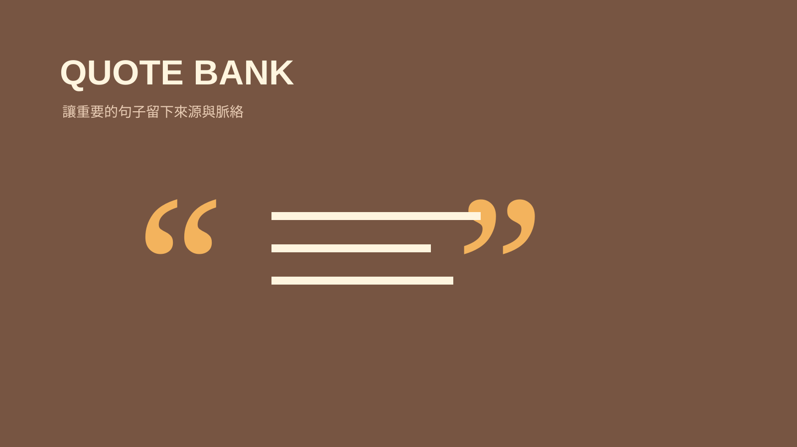

技能包 · 學習工具
金句知識庫
2026.08 · 個人專案

FIG. 27 — 產品主畫面
關於這個作品
金句知識庫為每個來源建立可追溯的條目，保存原文、出處與主題脈絡，並透過標籤、去重與總索引，讓零散的句子逐漸成為可以再利用的觀點網絡。
作品亮點
依人物、書籍與訪談建立來源金句檔
保留原文與出處，避免失去脈絡或錯誤引用
主題標籤與去重，支援跨來源檢索
同步更新總索引，讓知識可以持續累積